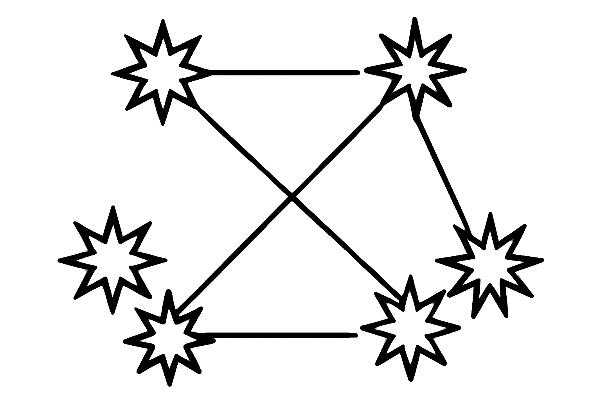
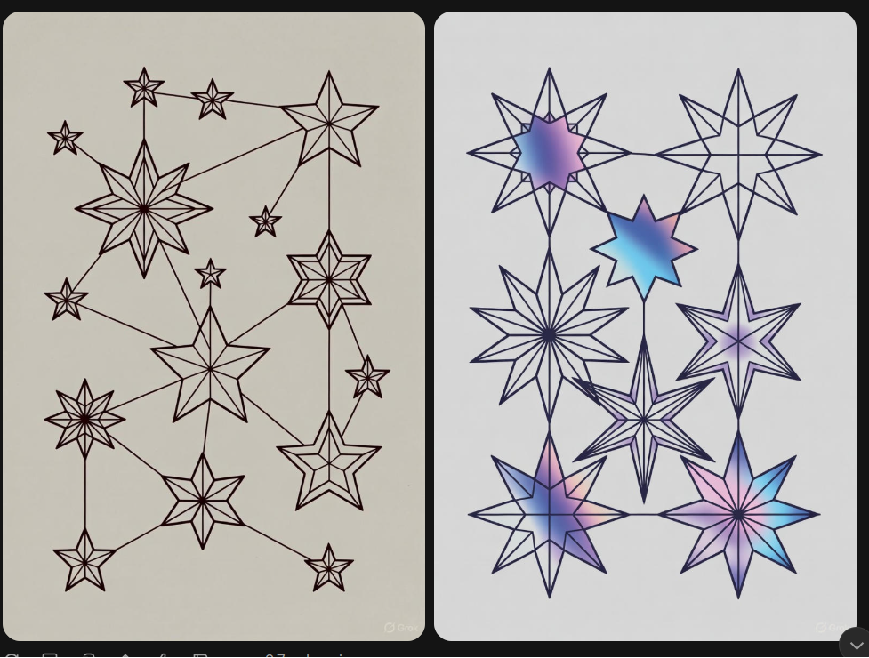
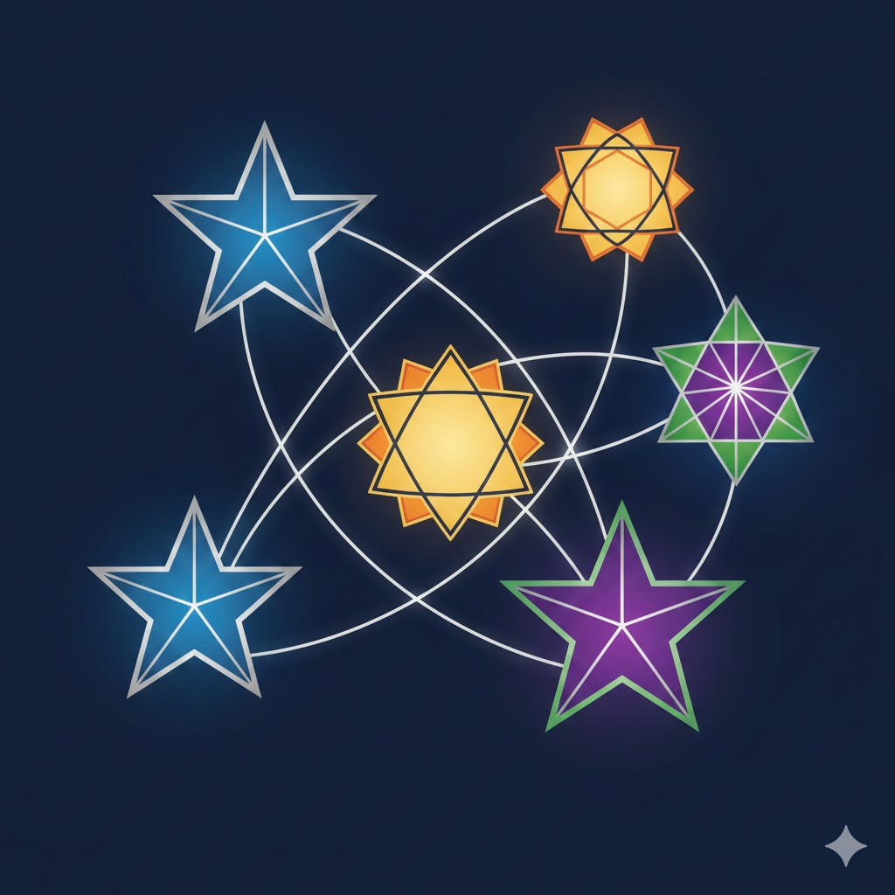

The Impossible Prompt That's Easy for Humans
Historically there have been very simple prompts that LLMs struggled with disproportionately compared to the areas in which they excel. The early versions of ChatGPT struggled with very simple one-step logical deduction. But that is no longer the case; in the last 2.5 years, LLMs have progressed tremendously.
In fact, in 2025, with most LLMs achieving superior results in so many tasks, it is hard to find a prompt with a simple, objective answer that is trivially verifiable, in which LLMs fail a 100%, but most humans can produce a correct answer.
Yet they still do exists and here I want to present one such prompt. So without further ado here is the prompt i used:
Create an image that displays two seven-pointed stars, two eight-pointed stars, and two nine-pointed stars. All stars are connected to each other, except for the ones with the same number of strands. The lines connecting the stars must NOT intersect.
It's actually a fun little problem. Using a pen and an old notebook (tool use, am I right🙂), it took me (a person of very average intelligence) about a minute of scribbling to arrive at a solution. Give it a try!
Here are the results from all the major models:
We start with ChatGPT:
Uh oh... Did it get anything right at all 🙃
Grok gave us two images, how kind!
At least it looks pretty.
We continue with Gemini...
And the most promising one, the rockstar of image generation, Nano Banana Pro.

Looks promising but still wrong.
Why is this query so hard for LLMs?
My theory:
This query combines two things that have historically been the hardest for LLMs to handle: counting (amusingly) and spatial awareness. These are further combined with a niche fact from graph theory, so it isn't even obvious that the query is solvable.